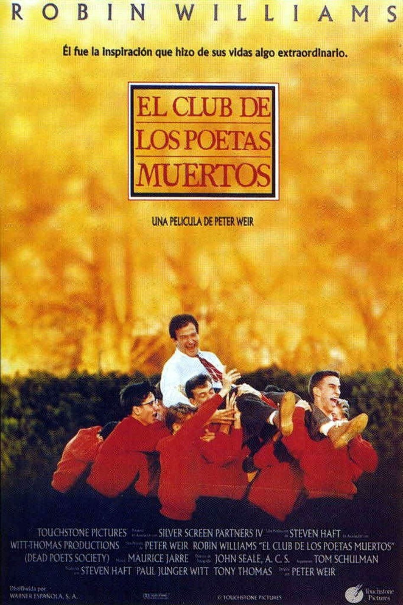
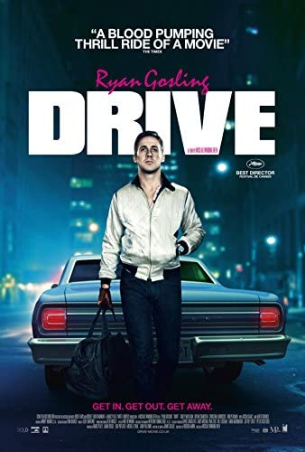
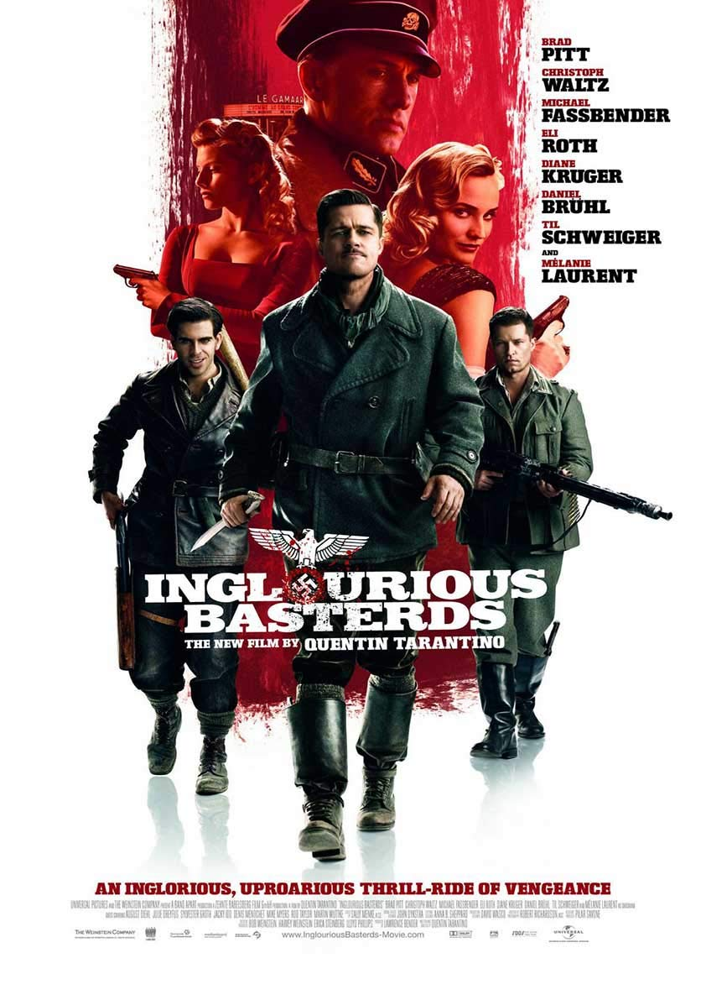
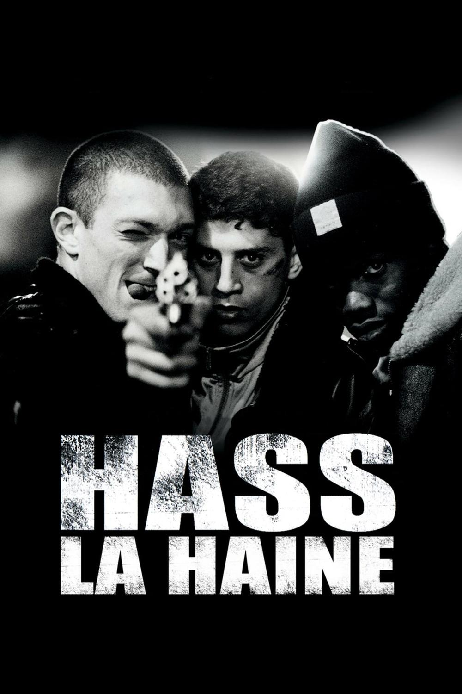
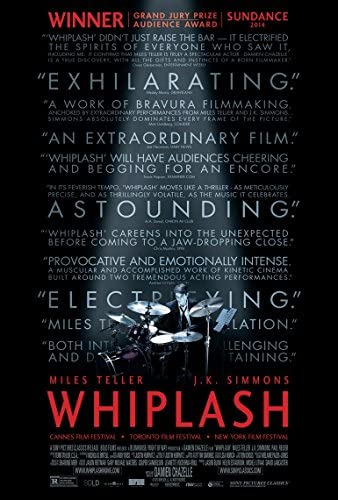

Moje TOP 5
5/5
Stowarzyszenie umarłych poetów
Reż. Peter Weir
John Keating zostaje nowym nauczycielem języka angielskiego na jednej z najbardziej prestiżowych i konserwatywnych uczelni w Ameryce. Różni się radykalnie od większości nauczycieli, przede wszystkim całkowitym lekceważeniem programu nauczania i ekscentrycznym zachowaniem. Nowy wykładowca pragnie za wszelką cenę wpoić uczniom miłość do poezji i ideę "carpe diem" Pewnego dnia Keating opowiada o Towarzystwie Umarłych Poetów. Od tego momentu szare i monotonne życie jego uczniów zmienia się drastycznie.Postanawiają odnaleźć swój głos w bezimiennym chórze i poznać otaczający ich świat znajdujący się za szarym szkolnym murem.
Zobacz na Filmwebie
4/5
Drive
Reż. Nicolas Winding Refn
Są mężczyźni, którzy wolność mają wpisaną w DNA. To oni jednym spojrzeniem potrafią złamać kobiece serce i sprawiają, że nie można o nich zapomnieć. Przyciągają jak magnes tajemniczym uśmiechem i obietnicą niebezpiecznej przygody. Takim mężczyzną jest Driver, chłopak, który za dnia pracuje jako kaskader, a nocami wynajmuje się jako kierowca gangsterów. Żyje, balansując na cienkiej granicy między rozsądkiem a brawurą. Do dnia, gdy pozna Irene i straci dla niej głowę. Nowa dziewczyna, wyglądająca jak anioł, rozpęta wokół niego prawdziwe piekło. Ich "love story" pisane będzie czystą adrenaliną. Trzymający w napięciu jak "Bullitt", rozgrzeje publiczność nie tylko rykiem silników, ale przede wszystkim gorączką uczuć.
Zobacz na Filmwebie
3/5
Bękarty Wojny
Reż. Quentin Tarantion / Eli Roth
Grupa specjalnego oddziału do walki z nazistami zwana "bękartami wojny", pod dowództwem porucznika Aldo Raine'a (Brad Pitt), wypowiada krwawą wojnę swoim wrogom. Znakiem rozpoznawczym nowego zespołu jest bestialskie traktowanie ciał niemieckich żołnierzy. Oddział porucznika Reine'a otrzymuje specjalne zadanie wysadzenia w powietrze kina wypełnionego nazistowskimi oficjelami. W międzyczasie, właścicielka kina Shosanna (Mélanie Laurent), Żydówka, której rodzina została rozstrzelana przez żołnierzy pułkownika Hansa Landa (Christoph Waltz), planuje zemstę na oprawcach. Splot wydarzeń sprowadzi wszystkich bohaterów do miejsca, gdzie ma się odbyć wielka premiera filmu - do paryskiego kina.
Zobacz na Filmwebie
2/5
La haine
Reż. Mathieu Kassovitz
Ten dzień dla Saida oraz jego kumpli Vinz'a i Huberta miał nie różnić się od pozostałych. Mieli jak zwykle pokręcić się po osiedlu, wypalić kilka skrętów, odwiedzić paru znajomych. Jednak po tych 24 godzinach nic nie będzie już takie samo. Tłem dla perypetii bohaterów filmu są zamieszki, które wybuchły w Paryżu po tym, jak podczas przesłuchania policjanci brutalnie pobili chłopaka arabskiego pochodzenia. Spirala agresji i nienawiści pomiędzy młodymi ludźmi z mniejszości etnicznych a francuską policją nakręca się coraz bardziej... Film pokazuje drugie oblicze Paryża, biedne blokowiska z mieszkańcami o wielonarodowościowym pochodzeniu w kontraście z centrum i bogatymi przedmieściami. Impulsem do powstania tego obrazu były autentyczne zamieszki i demonstracje, jakie miały miejsce w "mieście zakochanych" (gdzie słowo rasizm nie straciło na znaczeniu).
Zobacz na Filmwebie
1/5
Whiplash
Reż. Damien Chazelle
Trzymający w napięciu, wstrząsający dramat (choć ogląda się go jak thriller) psychologiczny. Młody perkusista Andrew Neyman (Miles Teller), uczeń jednej z najlepszych szkół muzycznych w kraju, trafia do klasy wybitnego nauczyciela Terence'a Fletchera (J.K. Simmons). Prowadzony przez niego zespół składa się z wybitnych młodych muzyków. Uczniowie Fletchera uchodzą za najlepszych absolwentów i właściwie od razu znajdują pracę w prestiżowych orkiestrach. Ale cena, jaką płacą za udział w zajęciach, często przewyższa ich psychiczne możliwości. Metoda Fletchera polega bowiem na psychicznym i fizycznym znęcaniu się nad nimi - wszystko w imię perfekcji, sztuki, doskonałości dźwięku. Fletcher i Neyman są do pewnego stopnia tacy sami - osiągają cel za wszelką cenę. Na ekranie oglądamy zderzenie dwóch psychopatycznych osobowości, ich walkę o dominację, krew, pot, łzy, klęski i sukcesy.
Zobacz na Filmwebie